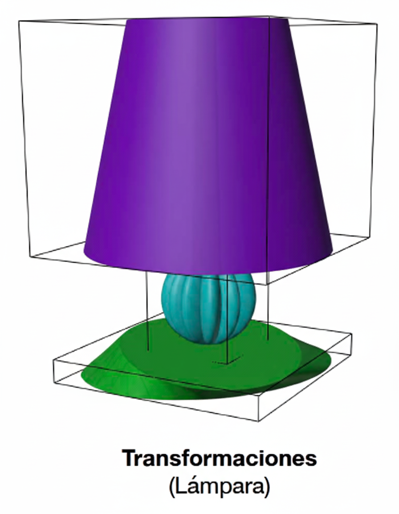

Fundamentos de Shape Grammar
Conceptos teóricos fundamentales que sustentan el sistema de diseño generativo.
Historia y Conceptos
Origen (1971)
Presentado por George Stiny y James Gips como el primer sistema formal para crear y comprender diseños a través de formas geométricas.
Componentes Principales
- Reglas de forma: Describen transformaciones geométricas
- Motor de generación: Aplica las reglas de manera sistemática
Definición de Regla
Una regla describe cómo una forma geométrica puede transformarse en otra, compuesta por:
- Formas geométricas primitivas
- Operaciones geométricas específicas
- Notación: Regla con flecha de izquierda a derecha
Motor de Generación
Sistema central que ejecuta las reglas y controla el proceso de generación de formas.
Tipos de Selección de Reglas
Descriptivo
Reglas predefinidas con criterios específicos de aplicación. Proporciona control total sobre el proceso generativo.
Aleatorio
Selección al azar entre reglas disponibles. Genera variedad impredecible manteniendo coherencia estructural.
Aprendido
Basado en patrones identificados en diseños existentes. Utiliza machine learning para optimizar selecciones.
Arquitectura del Sistema
Concepto de "cajas" y estructura modular para diseño de productos complejos.
Concepto de "Cajas"
Definir Arquitectura
Definir arquitectura del producto usando cajas de diferentes tamaños que representan componentes principales.
Llenar Cajas
Llenar las cajas con sólidos simples (primitivas geométricas) que servirán como base para transformaciones.
Aplicar Transformaciones
Aplicar transformaciones a los sólidos según las reglas definidas para cada componente.
Configuración Avanzada
Partes Fijas
Objetos de Blender que no se modifican durante la generación.
- Nombre debe iniciar con guión bajo (_)
- Para partes estándar o del contexto
- Ejemplo:
_tornillo,_base_fija
Operaciones Booleanas
Modificadores aplicados a modelos generados para crear geometrías complejas.
- Objeto de corte nombrado con guión bajo (_)
- Crear modificador en arquitectura de cajas
- Cambiar visibilidad del objeto que corta
- Tipos: Union, Difference, Intersect
Patrones
Para repetir partes iguales de manera eficiente.
- Modificador aplicado después de la generación
- Usar en arquitectura de cajas de Blender
- Ideal para patas de sillas, elementos decorativos
Partes Opcionales
Partes que aparecen aleatoriamente en las generaciones.
- Configurar con
"optional": true - Presentes solo en algunas generaciones
- Útil para variaciones de productos
Formas Primitivas (13 total)
Geometrías base que sirven como punto de partida para la generación de diseños.
Formas Básicas
cube
Cubo básico - forma fundamental para arquitecturas rectangulares
cylinder
Cilindro básico - ideal para componentes circulares y tubulares
sphere
Esfera básica - forma orgánica para elementos redondeados
cone
Cono básico - perfecto para elementos cónicos y puntiagudos
torus
Toro/dona - forma toroidal para elementos con agujero central
pentagon
Pentágono extruido - forma poligonal de cinco lados
dome_cut
Corte de cúpula - media esfera para elementos dome
tube_square
Tubo con sección cuadrada - tubo hueco rectangular
Formas Paramétricas
Requieren configuración aleatoria específica
polygon
Polígono irregular con número variable de vértices
Parámetros:
max_vertice: 12
quadrilateral
Cuadrilátero irregular con desplazamientos controlados
Parámetros:
fixed_axis: z,
max_displacement: 0.8
cube_loft
Cubo con deformación loft para formas orgánicas
Parámetros:
shape: convex,
factor: 0.5,
max_displacement: 0.7
revolution
Forma de revolución generada por rotación de perfil
Parámetros:
factor: 0.4
swept
Forma extruida con perfil personalizado a lo largo de un eje
Parámetros:
depth_factor: 0.6,
extrude_factor: 0.5,
axis: z,
max_displacement: 0.4
Transformaciones (14 total)
Operaciones que modifican las formas primitivas para crear variaciones complejas.
shade
Sombreado (Flat/Smooth) - controla la suavidad de superficies
shade_type: random
twist
Torsión sobre un eje - crea deformaciones helicoidales
axis: x,
max_twist: 0.8
taper
Afilado sobre un eje - reduce el grosor gradualmente
axis: z
bend
Doblado sobre un eje - curva la geometría
axis: z
bevel
Biselado de bordes - suaviza aristas y esquinas

factor: 0.7,
max_segments: 7
scale
Escalado en un eje - modifica proporciones direccionalmente
axis: x,
factor: 0.8
rotation
Rotación en un eje - gira la geometría
axis: x,
factor: 0.8
mirror
Espejo en un eje - crea simetría reflectiva
axis: x,
Nota: se uso la forma quadrilateral
array_rotation
Array rotacional - duplica objetos en patrón circular
max_count: 10
array
Array lineal - duplica objetos en línea recta
relative_offset_displace: 1.1,
max_count: 5,
axis: x,
scale_factor: 1
expand
Expandir geometría - aumenta el volumen direccionalmente
axis: x
contract
Contraer geometría - reduce el volumen direccionalmente
axis: x
pull
Tirar vértices - desplaza puntos en dirección específica
factor: 0.7,
direction: up
texture
Aplicar textura procedural - añade rugosidad superficial
strength_factor: 0.8,
location_factor: 0.7,
scale_factor: 0.5
Sistema de Reglas
Control avanzado sobre cuándo y cómo se aplican las transformaciones.
only_with
Aplicar transformación solo con forma específica
twist only_with cube
La transformación twist solo se aplicará cuando la forma sea un cubo.
except
No aplicar transformación a forma específica
rotation except cube
La transformación rotation se aplicará a todas las formas excepto cubos.
always
Aplicar siempre transformación (usar * para todas las formas)
bevel always *
La transformación bevel se aplicará siempre, independientemente de la forma.
Tips y Mejores Prácticas
Consejos prácticos para obtener los mejores resultados con Shape Grammar.
Iteración Múltiple
Crear múltiples configuraciones para el mismo diseño. Cada iteración refina y mejora los resultados.
Complejidad Gradual
Pasar de lo simple a lo complejo gradualmente. Comenzar con formas básicas antes de agregar transformaciones avanzadas.
Revisión 3D
No confiar solo en renders - revisar modelos 3D directamente para verificar la calidad geométrica.
Uso de Mirror
Usar Mirror para simetrías en formas irregulares, especialmente útil con polígonos y cuadriláteros.
Análisis de Valores
Analizar archivo de valores para entender qué configuraciones funcionan mejor y por qué.
Refinamiento Iterativo
Iterar múltiples veces sobre la misma configuración ajustando parámetros específicos.